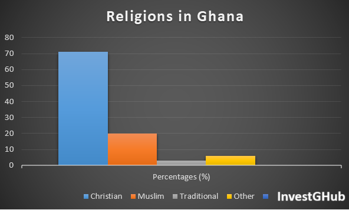
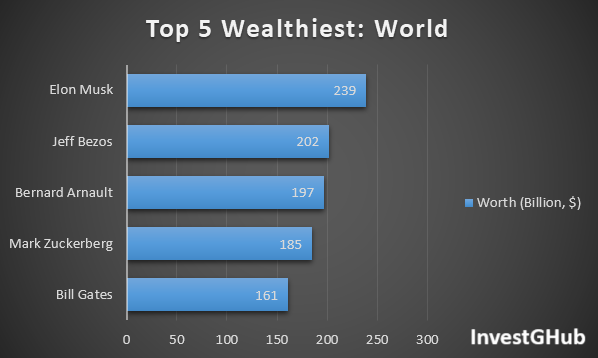
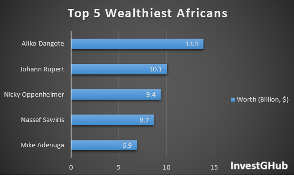
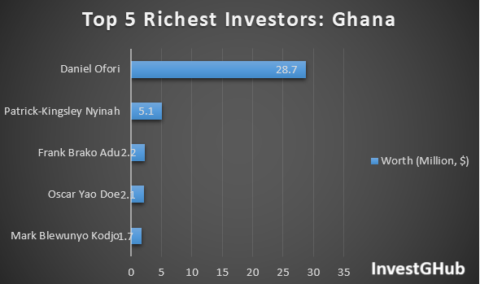
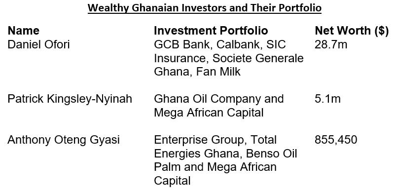

Fellow Ghanaians, have you ever wondered or has it ever crossed your mind as to what the Holy Bible says about investments?
Does its teachings condemn or approve of investments? Let's read on to ascertain for ourselves.
Consider this scripture:
"Ship your grain across the sea; after many days you may receive a return.
Invest in seven ventures, yes, in eight; you do not know what disaster may come upon the land. If clouds are full of water,
they pour rain on the earth.
Whether a tree falls to the south or to the north, in the place where it falls, there it will lie.
Whoever watches the wind will not plant; whoever looks at the clouds will not reap.
As you do not know the path of the wind, or how the body is formed in a mother’s womb, so you cannot understand the work
of God, the Maker of all things.
Sow your seed in the morning, and at evening let your hands not be idle, for you do not know which will succeed,
whether this or that, or whether both will do equally well."
Ecclesiastes 11:1 - 6
Investment as a topic is not directly discussed in the Bible.
However, we can discern various principles that offer guidance on how Christians can approach investment wisely
and make good use of God-given resources.
Lets take a look at this statistics:

Christians are that many in Ghana.
Can we imagine how prosperous the whole country will begin to be if even 35% of this number enter into well-informed,
diligent and safe investments and make profits.
The results will be mind-blowing.
What do I mean by that?
Many (not a few as it is now) people will be wealthy and this will definitely make Ghana wealthy.
Again, take a good look at these data:

And this:

And finally this:

Can you now see how many people going into profitable investments will benefit our motherland Ghana.
So now what are the 3 key biblical principles to consider when thinking about investments?
They are as follws:
Key Principle No. 1
The Call To Stewardship
The Bible teaches that everything we have belongs to God, and we are merely stewards of His resources.Stewards here can also mean 'Caretakers'.
What this means is that we should take care of our money and resources wisely, seeking to multiply them in ways that bring honor to God.
A popular example is Jesus’ parable of the talents in Matthew 25:14-30.
In this parable, the servants who invested their master’s money wisely were rewarded, while the one who hid his money out of fear was rebuked.
Words of Wisdom:
Put your money to productive use rather than letting them idle.Check this article on investing with a low amount for inspiration.
Related Posts
- Positive Investment Culture: What to Invest in With GHS100
- Make Money Online The Right Way For Every Ghanaian
- Losses in Investments: Why People Lose Money When They Invest
Key Principle No. 2
The Call For Diligence and Planning
Proverbs 21:5 states, "The plans of the diligent lead surely to abundance, but everyone who is hasty comes only to poverty."This scripture encourages us to approach investments with diligence, planning, and wisdom.
Proverbs 24:27 also reminds us "prepare your work outside; get everything ready for yourself in the field, and after that, build your house."
Clearly, the Bible encourages Christians to apprehend other venture every other venture, which include investment with proper planning and carefulness.
Words of Wisdom:
Make adequate preparations before taking financial risks.Check this article on Why people lose money in investment to gather knowledge.
Principle No. 3
Diversification of Portfolios
The Bible implicitly supports the concept of diversification.We can find in Ecclesiastes 11:2, which says, "Give a portion to seven, or even to eight, for you know not what disaster may happen on earth."
This can be interpreted as a reminder not to put all your eggs in one basket, as spreading investments across different areas can protect against unforeseen losses.
Again, this is a clear indication of the Bible talking about investments.
Take a look at this:

This cleary shows that there is much to gain when you diversify your investments.
Words of Wisdom:
Spread your investments across multiple avenues as insurance against the future unknown.You are welcome to follow our website, blog and social media for meaningful and profitable ways to diversify your investment portfolio.
NOTABLE MENTIONS
The Warning To Avoiding Greed
The Bible warns against the dangers of greed as a way to grow wealth.In 1 Timothy 6:10, the Bible warns, "For the love of money is a root of all kinds of evil."
Christians are encouraged to keep their motivations for investments pure and avoid placing their trust in wealth.
Proverbs 23:4-5 also reminds us not to overwork ourselves to gain wealth.
It says, "Do not wear yourself out to get rich; do not trust your own cleverness."
Wealth can be fleeting, and it is important not to make it an idol through greed.
Words of Wisdom:
Guard yourself against unrealistic promises of substantial returns from little investments.Check this article on Beware of ear-tingling investments to gather knowledge.
The Obligation To Give
Christians have the obligation to give as they receive."...God loves a cheerful giver." Second Corinthians 9:7.
Proverbs 11:25 says, "A generous person will prosper; whoever refreshes others will be refreshed."
The Bible encourages us to use our resources, including profits from our investments, to bless others and support the work of God.
All said and done...
Judging from the above principles, the Bible does not condemn investments but rather approves it.The Bible rather calls Christians to be wise stewards of their resources, managing them with diligence and understanding.
By following biblical principles such as stewardship, careful planning, and diversification, investments can be a tool not only for personal financial growth but for advancing God’s kingdom and serving others.


Comments